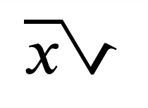
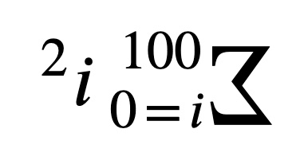
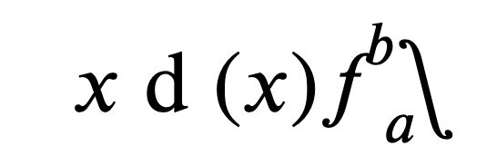
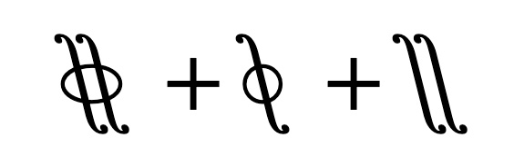

The whole radicand renders correctly in LTR, but somehow only the first addend renders in RTL.
However this other formula renders just fine in RTL, looks like it's just an issue with the msqrt element only.
The square root operator renders just fine in LTR, but it looks off in RTL.
This is how Firefox natively renders this same MathML:

The summation symbol is not flipped in RTL:
This is how Firefox natively renders this same MathML:

The integral symbol is not flipped in RTL:
This is how Firefox natively renders this same MathML:

Same thing happens with double, contour and surface integrals:
This is how Firefox natively renders the MathML above:
